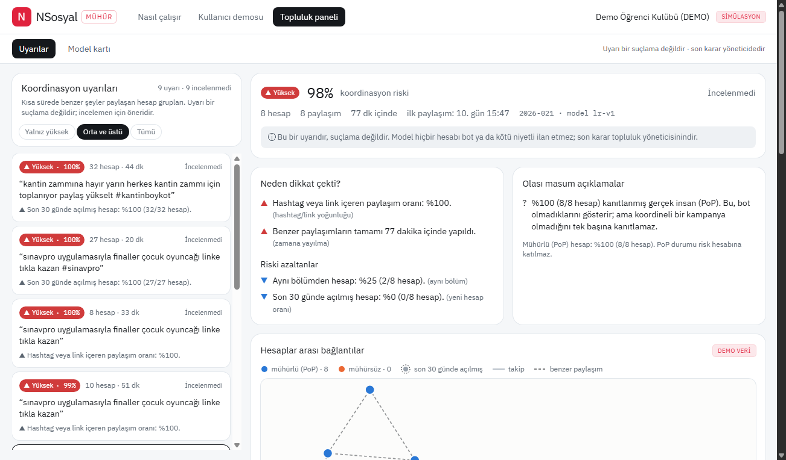
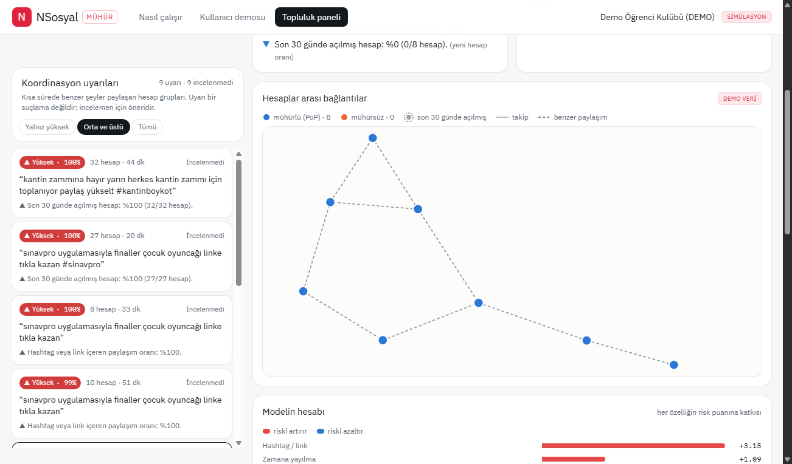
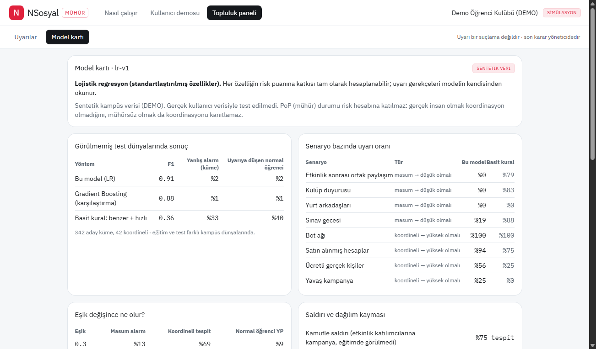
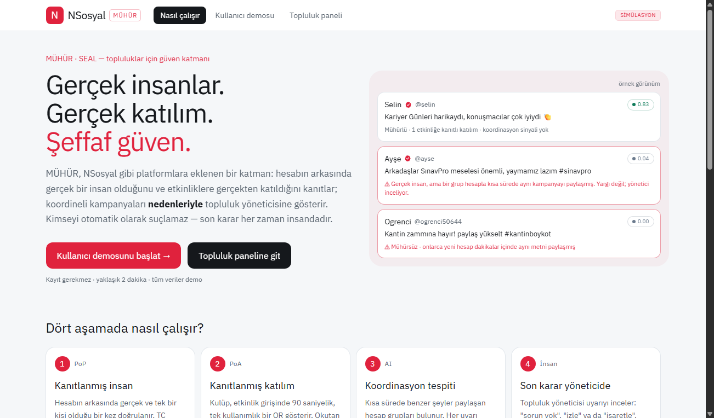
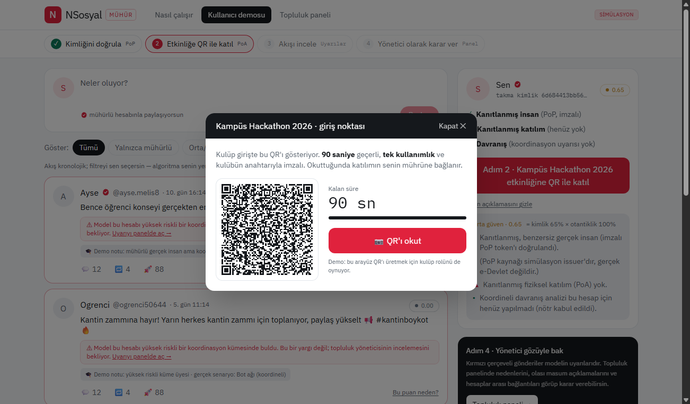
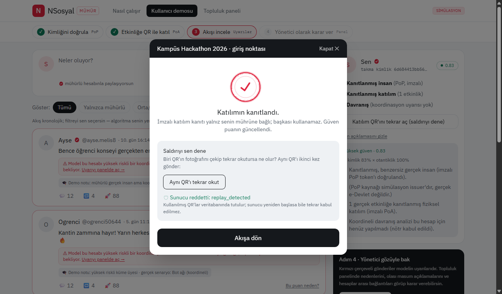
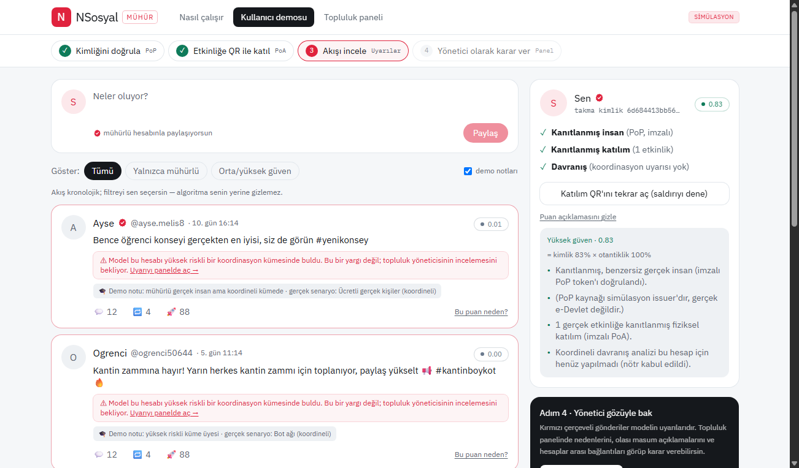

MÜHÜR · SEAL — Geliştirme raporu · 23–24 Kasım 2026
Demo görünümlü prototipten
güvenilir, açıklanabilir bir ürüne.
NFTE World Series of Innovation ön değerlendirmesinde 7 alanın 5'i Strong, 2'si Adequate geldi. Geliştirilmesi istenen noktalar üzerine iki günde altı adımlık bir plan uyguladık: mevcut kodu denetledik, güvenlik açıklarını kapattık, yapay zekâyı arayüze bağlayıp açıklanabilir yaptık, bir topluluk yöneticisi paneli kurduk, modeli zor senaryolarla ve saldırılarla test ettik ve hepsini tek tıkla açılan bitmiş bir demo sitesinde birleştirdik.
BASLAT.batNe zaman ne yapıldı?
Her adım ayrı bir commit olarak GitHub'da. Bağlantılar doğrudan değişikliklere gider.
- Proje karmaşasının çözülmesi ·
b833171Klasörde üç ayrı "sürüm" vardı. Asıl sürümün adı "başlangıç" olan klasör olduğu, diğerlerinin içine birleştirilmiş eski yamalar olduğu bulundu. 27 Ağustos'tan beri commit'lenmemiş işler (React arayüz, güven motoru, testler) kaydedildi.
- 1 · Denetim ve gerçek/demo tablosu ·
5d8b482Her özelliğin gerçekten çalışıp çalışmadığı tek tek kontrol edildi; üç ciddi açık canlı olarak doğrulandı.
- 2 · Güvenlik ve mahremiyet (v0.4) ·
aba565bEd25519 imzalar, SQLite kalıcı kayıt, organizatör yetkisi, sunucu tarafında güven puanı. Testler 27 → 62.
- 3–4 · Açıklanabilir model + topluluk paneli (v0.5) ·
f66d8feSentetik kampüs, küme düzeyinde koordinasyon modeli, nedenleri ve masum açıklamalarıyla uyarılar, yönetici paneli.
- 5 · Sağlamlık deneyleri ·
e93fd77Eşik taraması, ablasyon, kamufle saldırı, dağılım kayması. Bir model açığı bulunup kapatıldı; kendi ilk iddiamız düzeltildi.
- 6 · Bitmiş site (v0.6) ·
ff0d449Açılış sayfası, rehberli kullanıcı demosu, tek sunucu ve tek tıkla çalıştırma. Tüm akış gerçek tarayıcıda uçtan uca doğrulandı.
1Başlangıç: denetim
Önce "ne gerçekten çalışıyor, ne yalnız demo" sorusunu dürüstçe cevapladık. Bulduğumuz en ciddi üç sorun, jürinin "geliştirin" dediği alanlarla birebir örtüşüyordu.
| Bulgu | Nasıl doğrulandı? | Önce | Şimdi |
|---|---|---|---|
Güven puanı kandırılabiliyordu. /trust/score imzasız JSON "kanıtları" kabul ediyordu. | Elle yazılmış sahte kimlik + 10 sahte katılım gönderildi | 0.9997 · high | 422 reddedildi |
| İstemci kendi bot olasılığını gönderiyordu. | sybil_probability: 0 ile istek | kabul | 422 reddedildi |
| Herkes her etkinlik için QR üretebiliyordu. Etkinliğe gitmeden katılım kanıtı alınabiliyordu. | Anahtarsız /poa/qr çağrısı | 200 · QR verildi | 401 yetkisiz |
| AI modeli arayüze bağlı değildi. Ekrandaki bot olasılıkları koda elle yazılmış sabitlerdi. | Kod incelemesi (App.jsx: 0.03, 0.28, 0.72…) | sabit sayılar | tümü modelden |
| Kullanılmış QR listesi bellekteydi; sunucu yeniden başlayınca sıfırlanıyordu. | Kod incelemesi | bellek | SQLite, testli |
| README'de kodda olmayan teknolojiler "kullanılıyor" diye yazıyordu (XGBoost, GraphSAGE, HuggingFace); "ilişkilendirilemez kimlik", "KVKK uyumlu" gibi doğrulanmamış iddialar vardı. | Belge ↔ kod karşılaştırması | abartılı | düzeltildi |
Ayrıntılı tablo: docs/durum_tablosu.md — başvuru metinleri için "ne söylenebilir / ne söylenmemeli" listesi de içinde.
2Güvenlik ve mahremiyet
Temel ilke: istemciye güvenilmez. Güven kararını etkileyen her girdi ya sunucunun imzaladığı bir token'dır ya da sunucunun kendi kaydıdır.
Neler değişti?
- HS256 → Ed25519. Kimlik (PoP) ve katılım (PoA) ayrı anahtarlarla imzalanıyor. Açık anahtarlar
/.well-known/muhur-keysadresinde; başka bir topluluk ya da denetçi token'ları bağımsız doğrulayabilir ama sahte üretemez. - Takma kimlik için ayrı anahtar. TC → tek yönlü HMAC. TC hiçbir yere yazılmıyor (veritabanı dosyası dahil test edildi).
- Organizatör yetkisi. QR'ı yalnız etkinliğin sahibi kulüp, etkinlik açıkken üretebiliyor. Anahtarlar veritabanında SHA-256 özeti olarak tutuluyor.
- Kalıcı kayıt. Kullanılmış QR'lar ve katılımlar SQLite'ta; QR tüketimi ve katılım kaydı tek işlemde (atomik).
- Kişi başına etkinlik başına tek katılım — veritabanı kısıtıyla garanti.
- Sıkı CORS, istek sınırı, fail-closed ayarlar: demo/üretimde anahtar eksikse servis başlamıyor.
| Saldırı koşumu (gerçek HTTP API) | Sonuç |
|---|---|
| Elle yazılmış JSON kanıtla güven puanı | engellendi |
| İstemcinin kendi bot olasılığını göndermesi | engellendi |
| Anahtarsız QR üretme | engellendi |
| Başka kulübün etkinliğine QR üretme | engellendi |
| Replay (aynı QR'ı ikinci kişiyle) | engellendi |
| Replay (sunucu yeniden başladıktan sonra) | engellendi |
| Aynı kişinin aynı etkinliğe iki kez katılması | engellendi |
| Tamper (QR imzasını bozma) | engellendi |
| Süresi dolmuş QR | engellendi |
| Başka anahtarla imzalı sahte kimlik | engellendi |
alg=none token | engellendi |
| Algoritma karıştırma (HS256 + açık anahtar) | engellendi |
| Başkasının katılım kanıtını kullanma | engellendi |
| Sahte imzalı katılım kanıtı | engellendi |
| Token türü değiştirme (QR'ı kimlik diye gönderme) | engellendi |
3Açıklanabilir koordinasyon modeli
Eski modelin 0.989 F1'i, botların kendi içinde yoğun takipleştiği kolay bir ağda ölçülmüştü ve arayüze hiç bağlı değildi. Problemi yeniden tanımladık.
Birim: hesap değil, küme
Koordinasyon tek bir hesabın özelliği değil, birden fazla hesabın birlikte yaptığı bir şey. Model "bu hesap bot" demez; "bu hesap grubu kısa sürede benzer şeyler paylaşmış, nedenleri şunlar" der.
Neden lojistik regresyon?
Her özelliğin puana katkısı tam olarak hesaplanabiliyor (katsayı × değer). Uyarı gerekçeleri modelin kendisinden okunuyor, sonradan uydurulmuş metin değil. Gradient Boosting yalnız karşılaştırma için.
PoP durumu modelde yok
Gerçek insan olmak koordinasyon olmadığını, mühürsüz olmak da koordinasyonu kanıtlamaz. Modele girseydi mühürsüz kullanıcılar sırf bu yüzden riskli görünürdü. Bu karar F1'den biraz götürdü; adalet için kabul ettik.
Test edilen senaryolar (sentetik kampüs)
| Senaryo | Tür | Neden zor? |
|---|---|---|
| Etkinlik sonrası ortak paylaşım | masum | Onlarca öğrenci aynı etkinlik adıyla, aynı etiketle, aynı saatte yazar |
| Kulüp duyurusu | masum | Üyeler duyuruyu birebir kopyalar |
| Yurt arkadaşları | masum | Birbirini yoğun takip eden grup aynı akşam aynı konuda yazar |
| Sınav gecesi | masum | Aynı bölümden çok kişi aynı ders hakkında, etiketle yazar |
| Bot ağı | koordineli | Yeni açılmış hesaplar dakikalar içinde aynı metni basar |
| Satın alınmış hesaplar | koordineli | Eski ama uzun süre sessiz hesaplar birden aynı metni paylaşır |
| Ücretli gerçek kişiler | koordineli | Mühürlü, gerçek öğrenciler farklı cümlelerle aynı kampanyayı yayar — tezin "gerçek insan ≠ otantik davranış" iddiası |
| Yavaş kampanya | koordineli | Üç güne yayılır, metinler yeniden yazılır |
Sonuç: masum senaryolarda yanlış alarm ve kampanya tespiti
12 sentetik kampüs dünyasında eğitim, hiç görülmemiş 8 dünyada test (342 aday küme, 42'si koordineli). Model F1 0.91 · Gradient Boosting 0.88 · basit kural 0.36.
Bir uyarı nasıl açıklanıyor?
Modelin katkılarından üretilen, ölçülen değeri söyleyen tarafsız cümleler: "Hashtag içeren paylaşım oranı %100", "Benzer paylaşımların tamamı 77 dakika içinde yapıldı".
"Hesapların %51'i aynı bölümden; aynı sınav hakkında doğal paylaşım olabilir." Ortak etkinlik ve kulüp bilgisi yalnız paylaşımlar ondan bahsediyorsa masum açıklama sayılır.
Her uyarıda: "Bu bir uyarıdır, suçlama değildir. Model hiçbir hesabı bot ya da kötü niyetli ilan etmez." Yönetici "sorun yok / izle / işaretle" der, karar kaydedilir.
4Sağlamlık: modeli kendimiz kırmaya çalıştık
Tek bir skora güvenmek yerine dört deney yaptık. İkisi bize yanıldığımız yerleri gösterdi; ikisini de açıkça raporladık.
Bulgu 1 — Bir açık bulduk ve kapattık
Saldırgan modelin "ortak etkinlik riski azaltır" kuralını bilirse, kampanyayı gerçek bir etkinlikten hemen sonra o etkinliğe gerçekten katılmış öğrencilere yaptırabilir.
| İlk model | %0 yakalandı |
| Bağlam yalnız içerikle tutarlıysa sayılınca | %75 yakalandı |
Düzeltme genel bir ilke, bu saldırıya özel yama değil; saldırı eğitim verisine eklenmedi. Yan etkisi de olumlu oldu: F1 0.894 → 0.907, sınav gecesi alarmı %31 → %19.
Bulgu 2 — Kendi iddiamızı düzelttik
İlk raporda basit kurala karşı kazancı "PoA bağlamına" bağlamıştık. Ablasyon bunu desteklemedi:
| Tüm özellikler | normal öğrenci alarmı %2,4 |
| Bağlam özellikleri yok | %3,6 |
| Yalnız metin + zaman | %38,7 |
Kazancın büyük kısmı hesap geçmişinden (yeni hesap oranı, açılış tarihi, sessizken aktifleşme) geliyor. Bağlamın etkisi küçük ama gerçek; asıl değeri yöneticiye masum açıklamayı göstermesi. Rapor buna göre düzeltildi.
| Eşik | Masum alarm | Kampanya tespiti | Normal öğrenci alarmı |
|---|---|---|---|
| 0.3 | %13 | %69 | %8,7 |
| 0.4 | %8 | %69 | %4,4 |
| 0.5 | %5 | %69 | %2,4 |
| 0.6 | %1 | %69 | %0,6 |
| 0.7 | %0 | %69 | %0,0 |
| 0.9 | %0 | %53 | %0,0 |
Tespit eşikten neredeyse bağımsız: kaçan kampanyaların çoğu aday kümeye hiç girmiyor. Bu, mesajların anlamına bakan bir benzerlik ölçüsü gerektiriyor.
| Dağılım kayması | Masum alarm | Kampanya tespiti |
|---|---|---|
| Küçük kampüs (250 öğrenci) | %3 | %94 |
| Büyük kampüs (900 öğrenci) | %3 | %84 |
| Masum senaryo ağırlıklı | %1 | %75 |
| Saldırı ağırlıklı | %0 | %80 |
Model bir kez eğitildi, farklı kampüslerde denendi. Küçük kampüste normal öğrenci alarmı %5'e çıkıyor: parametreler kampüs büyüklüğüne göre ayarlanmalı.
Tam teknik değerlendirme: docs/model_degerlendirme.md
5Topluluk yöneticisi paneli
Jüri SEAL'in nasıl çalıştığını anlamış ama ürünün nasıl kullanılacağını görmek istiyordu. Panel, bir öğrenci kulübü yöneticisinin açacağı ekran.



- İnsan incelemesi: "Sorun yok / İzle / İşaretle" + not. Karar kalıcı; model yeniden çalışsa da korunuyor; geçmiş görünüyor.
- Yalnız organizatöre açık: başka bir kulüp uyarıları göremez ve karar veremez (testli).
- Dürüst demo: her ekranda "DEMO VERİ"; "gerçek senaryoyu göster" bağlantısı modelin haklı mı haksız mı olduğunu gösteriyor (gerçek üründe bu bilgi yok).
6Bitmiş site: rehberli demo
Her şey tek bir adreste, adım adım anlaşılır bir akışta. Bir jüri üyesi kayıt olmadan, yaklaşık iki dakikada tüm sistemi görebiliyor.



replay_detected ile reddediyor. Güvenlik ekranda görünür.
Ne gerçek, ne demo, ne eksik?
✓ Gerçekten çalışıyor
- Ed25519 imzalı kimlik ve katılım kanıtları
- TC'nin hiçbir yere yazılmaması
- Organizatör yetkili, tek kullanımlık QR check-in
- Kandırılamayan, sunucu tarafı güven puanı
- Arayüze bağlı açıklanabilir model
- Yönetici paneli ve kalıcı insan incelemesi
- 74 test, 15/15 saldırı koşumu
◌ Simülasyon / demo
- e-Devlet girişi (gerçek kuruma bağlanmaz)
- Tüm hesaplar ve paylaşımlar (sentetik kampüs)
- Model sonuçları (yalnız sentetik veride ölçüldü)
- Demoda arayüz, QR üretmek için kulüp rolünü de oynuyor
△ Bilinen sınırlar
- Farklı cümlelerle, hashtag'siz yazılan kampanyaların ~1/3'ü kaçıyor
- Ücretli gerçek kişilerde tespit %56, yavaş kampanyada %25
- Sınav gecesinde %19 yanlış alarm
- QR fotoğrafı 90 sn içinde uzağa gönderilebilir
- Organizatör rolleri, anahtar yenileme yok
- Gerçek kullanıcı testi yapılmadı
Sırada ne var?
Backend siteyi de sunduğu için tek bir servis yeterli. Jüri linke tıklayıp kendisi deneyebilecek.
Çalışan özellikler ekran kaydıyla; planlananlar ayrı bir bölümde.
Onam formu, veri minimizasyonu, itiraz hakkı ve etik onay planlandıktan sonra tek bir kulüpte, sınırlı sürede.
Kendi bilgisayarında çalıştır
- Python 3.11+ ve Node.js 18+ kurulu olsun.
- Depoyu indir:
git clone https://github.com/omertugrulbayram/muhur - Windows'ta
BASLAT.bat'a çift tıkla. Kurar, derler ve tarayıcıdahttp://127.0.0.1:8000açar.
| Sayfa | Adres | Ne var? |
|---|---|---|
| Açılış | /#/ | Dört aşama, rakamlar, ne gerçek / ne demo |
| Kullanıcı demosu | /#/demo | Mühür → QR ile katılım → replay saldırısı → akış |
| Topluluk paneli | /#/panel | Uyarılar, nedenler, ağ grafiği, insan incelemesi, model kartı |
Testler: backend\.venv\Scripts\python -m pytest -q · Saldırı koşumu: backend\.venv\Scripts\python attack_harness\replay_attack.py · Model: python -m app.ml.train_coordination ve python -m app.ml.robustness